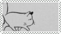
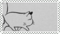

Mother
by Herman de Coninck
What you do with time
is what a grandmother clock
does with it: strike twelve
and take its time doing it.
You're the clock: time passes,
you remain. And wait.
Waiting is what happens to
a snow-covered garden,
a trunk under moss,
hope for better times
in the nineteenth century,
or words in a poem.
For poetry is about letting things
grow moldy together, like grapes
turning into wine, reality into preserves,
and hoarding words
in the cellar of yourself.